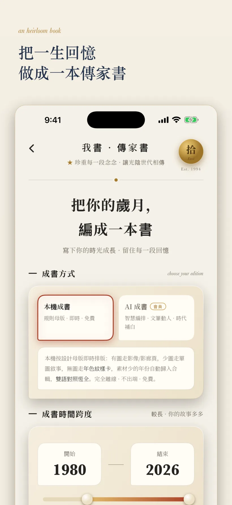

端上成書
成書不是把截圖拼成 PDF。拾得先把回憶投影為頁面素材，再經過確定性選版和分頁，最後由 iOS 原生 PDF 渲染器逐頁繪製。

本機軌是確定性回落路徑：即使模型端點不可用或 AI 書稿未通過驗證，使用者仍可從端上 Memory 生成完整書冊。它也把私域原文離端風險控制在使用者可選擇的範圍內。
AI 軌輸出 BookEnvelope 後，客戶端檢查母版白名單、引用逐字命中、防注入、雙語完整度、主題主權和照片密度。任一關鍵規則失敗，整冊回落本機軌。